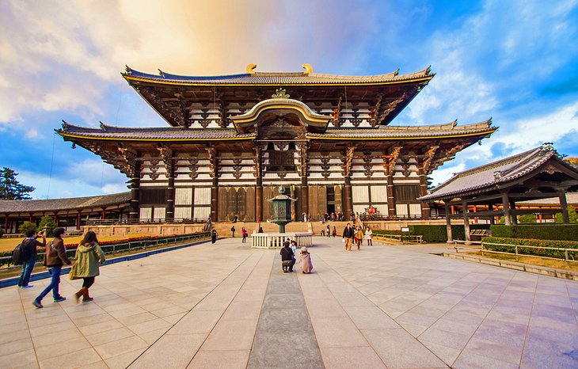

Introduction
Japan's inbound tourism market has shown remarkable growth, with the number of foreign visitors traveling to Japan in 2019 reaching a record high of 31.88 million (2.2% more than the previous year), marking the seventh consecutive year of record high (See Figure 1). In the same year, Japan earned about 46.1 billion USD in foreign tourist expenditure from visitors to Japan, moving the country to seventh place in the world, ahead of Germany and Australia. The travel and tourism sector contributed 359 billion USD to Japan's GDP, making it the world's third-largest market in this sector after the United States and China
1-Imperial Palace and Nijubashi Bridge
The Nijubashi Bridge connects the Imperial Palace front Plaza called the Kokyo Gaien and the Imperial Place over a deep moat. It was once a wooden bridge with two levels which is why it was named Nijubashi or "double-bridge".
The wooden bridge was replaced with a steel bridge in 1964. It is best viewed from the large plaza called the Kokyo Gaien. Two bridges make up the entrance of the inner palace grounds. The stone bridge in front is called the Meganebashi or the Eyeglass Bridge and the other is the two-level steel Nijubashi Bridge.

2-Hiroshima Peace Memorial Park
Hiroshima's Peace Memorial Park (平和記念公園, Heiwa Kinen Kōen) is one of the most prominent features of the city. Even visitors not looking for it will likely stumble upon the large park of over 120,000 square meters. Its trees, lawns, and walking paths are in stark contrast to the surrounding downtown area.
3-The Island Shrine of Itsukushima
Itsukushima Shrine on Miyajima (literally, "shrine island") is perhaps the most famous shrine in Japan, known for its "floating" torii gate. Miyajima Island has long been a holy site in shinto, and Itsukushima Shrine was built in the 12th century. The shrine, and the torii gate, are built over water. This is unique to other shrines in Japan. During high tide, the torii gate and the shrine seem to be floating in the water. The shrine is more than just the torii gate, and actually consists of a prayer hall, a main hall, and even a Noh theater stage. All of the different buildings of the shrine are connected by boardwalks above the sea.

4-Temple City: Historic Nara
Historic Monuments of Ancient Nara include the group of buildings of the Buddhist temples representing this historic city, the harmonious cultural landscape of the sacred forest and the Shinto shrine, demonstrating traditional worship in Japan, and an archaeological site.These essential component parts of the property illustrate Japanese political structure and cultural tradition in the 8th century. Each component part has an adequate buffer zone, and thus the integrity of the property is ensured in the contexts of both wholeness and intactness.
5-Osaka Castle
The construction of Osaka Castle (大阪城, Ōsakajō) started in 1583 on the former site of the Ishiyama Honganji Temple, which had been destroyed by Oda Nobunaga thirteen years earlier. Toyotomi Hideyoshi intended the castle to become the center of a new, unified Japan under Toyotomi rule. It was the largest castle at the time.
6-Chūbu-Sangaku National Park and the Japanese Alps
The Chubu Sangaku National Park (中部山岳国立公園, Chūbu Sangaku Kokuritsu Kōen) roughly encompasses the Northern Japan Alps, a volcanic mountain range that stretches across Toyama, Nagano and Gifu Prefectures, and includes several 3000 meter high peaks and breathtaking hiking courses. Together with the Central Japan Alps and Southern Japan Alps, the Northern Japan Alps were so named for being reminiscent of the European Alps.

7-Okinawa Churaumi Aquarium
The Churaumi Aquarium (美ら海水族館, Churaumi Suizokukan) is widely considered Japan's best aquarium. It is the main attraction of the Ocean Expo Park on the former grounds of the 1975 International Ocean Expo in northern Okinawa Honto. The aquarium was completely redesigned and reopened in 2002.
The highlight of a visit to the Churaumi Aquarium is the massive Kuroshio Tank, one of the largest in the world. The tank takes its name from the warm Kuroshio current which plays a large part in the variety of Okinawa's of marine life. The tank contains a wide variety of species, the most striking of which are the giant whale sharks and manta rays.
Some information about Japan
| Population | 125,769,179 |
|---|---|
| Tourist rate | 31.88 million |
| Number of hotels | close to 89 thousand hotels |